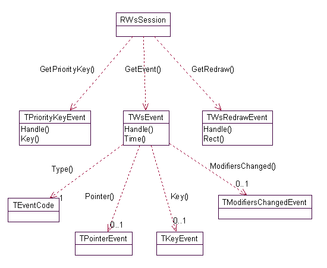

|
| |
A client application connects to the window
server by creating a window server session and calling
RWsSession::Connect(). Events generated by the window server are
then delivered to the client via the session, and the client must handle these
events appropriately.

Window server event types
The window server generates events of three different classes:
a general event, TWsEvent which should be handled by an active object of standard priority, and represents user input events such as pointer and key events
see General events
a redraw event, TWsRedrawEvent which should be handled by an active object of lower priority
see Redraw events
a priority key event, TWsPriorityKeyEvent which should be handled by an active object of higher priority
All window server applications handle standard events, and nearly all handle redraw events. Only a few, however, handle priority key events. It is only in very rare cases that an application does not handle redraw events, as this will require that all its windows are backed-up windows.
Events are always associated with a window. For some event types, such as key events, this is a window group; for other event types, such as pointer events, it is a drawable window. The event delivered to the client contains a handle that can be used to identify the window: this is the handle that was passed as a parameter when the window was created. In the case of window groups, however, this is usually unnecessary, because most applications have only one window group.
Each event class should be handled by its own active object. This is so that the different classes may be handled at different priorities.
The window server maintains a server-side buffer of all events
queued to an application — each application has its own queue within the buffer (this is only for General Events, Redraw and Priority Key events are done by a different mechanism). Each application
must handle events appropriately. The RWsSession::GetEvent() function (or
RWsSession::GetRedraw() or RWsSession::GetPriorityKey()) must be called as
the first stage of handling a completed request, and the event must then be
analysed and handled.
Each event must be handled relatively quickly (at most a couple of
seconds) so that the application remains responsive to user input. If an
event requires more extended processing (such as a key which causes a large
spreadsheet recalculation), then this processing should be split into smaller
chunks and handled by a client-side active object running at lower priority
than the GetEvent() handler.
An application which does not observe these protocols will appear to hang — though it will not hang the whole machine. The window server supports hotkeys which it handles directly, so that a badly behaved application may be killed by the server.
|
Copyright ©2002 Symbian Ltd. 6.1-00174 |
|